March 2021
How We Met
A friend’s birthday in Indiranagar, a power cut at half past nine, and a conversation that carried on by candlelight long after the lights came back on.
photo · how we met
Introducing
Aarav & Meera
Click to open
the Magic…
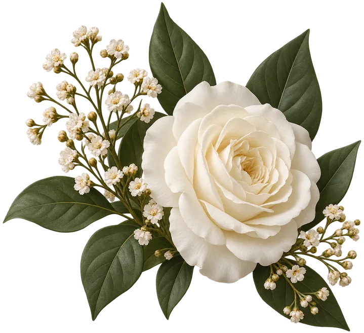
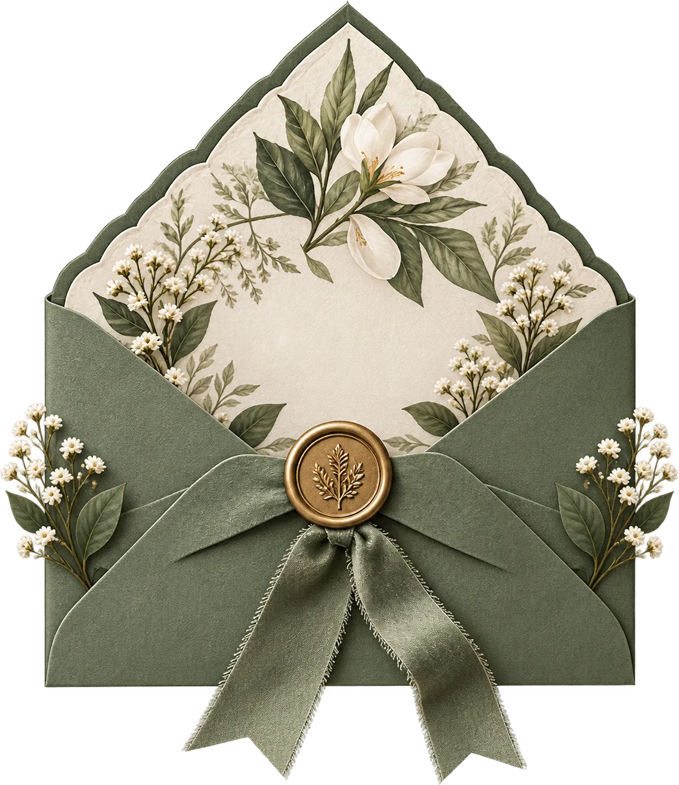
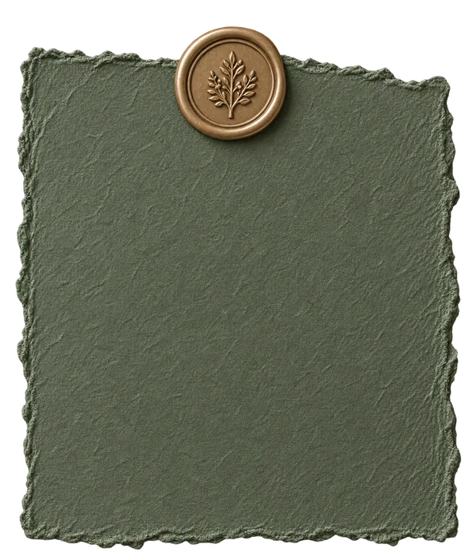
The Details
View
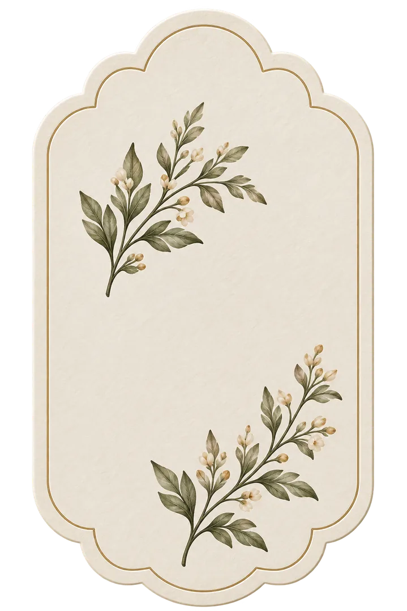
Savethe Date
KindlyRSVP
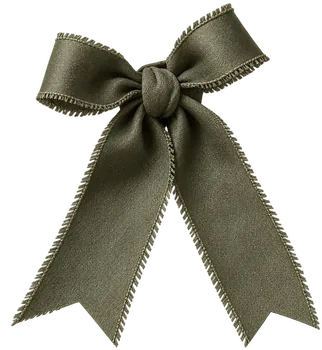
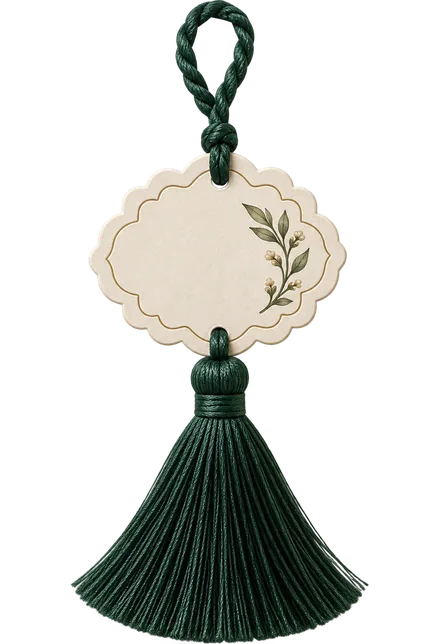
Aarav
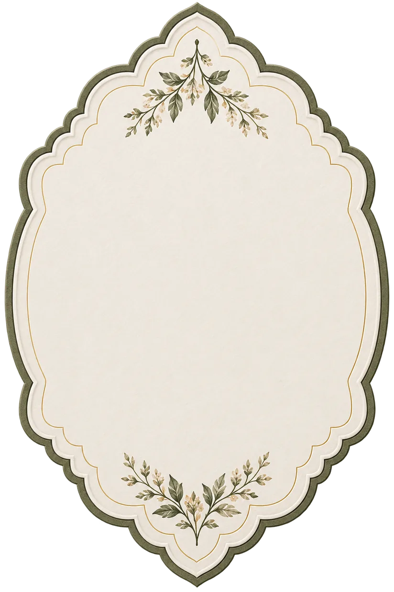
Together
with their families
invite you to celebrate
their wedding
27|Nov|2027
The Ivy Gardens
Bengaluru, India
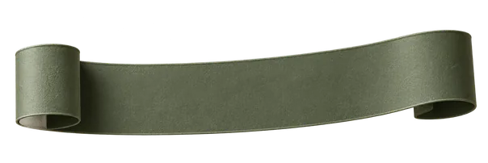
November 27th, 2027
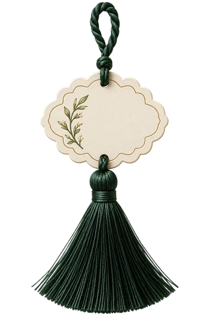
Meera
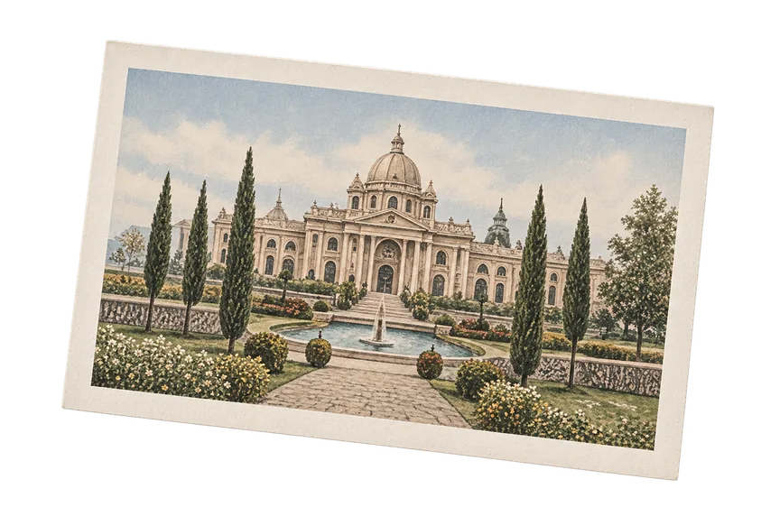
AM
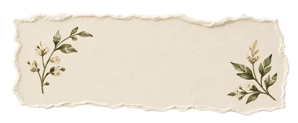
Two hearts,
one beautiful journey
Time to Celebrate
Counting down to the wedding.
Aarav & Meera
27 . 11 . 27
Together with their families
Saturday, 27 November 2027
seven in the evening
We would be so glad to have you with us. A formal invitation, with all the finer details, follows closer to the day.
Add to calendarSix years, one long yes
It started with a power cut and a borrowed candle. Everything since has been a slow, happy accumulation — of mornings, arguments about music, and one very long yes.
March 2021
A friend’s birthday in Indiranagar, a power cut at half past nine, and a conversation that carried on by candlelight long after the lights came back on.
April 2021
Filter coffee at eight in the morning, because neither of us wanted to wait until the evening. We stayed at that table until the owner began stacking chairs.
December 2026
Asked quietly, at home, on an ordinary Tuesday — which is exactly how we would have wanted it. No photographer, no audience, and no hesitation.
November 2027
Two families, one garden, and all of you. We cannot wait to see your faces across the lawn.
Good to know
Everything you might need for the evening. If we have missed something, ask either of us — we would rather you asked than wondered.
When
Saturday, 27th November 2027, from 7:00 PM. Dinner is served at half past eight.
Where
The Ivy Gardens, Palace Greens, Bengaluru 560080, Karnataka, India.
Dress code
Garden formal. The evening is held outdoors on grass, so heels are best left at home.
Getting there
Forty minutes from Kempegowda International Airport. Parking is on site, and cars may be left overnight.
Accommodation
A block of rooms is held at The Palace Hotel, ten minutes away. Mention the wedding when booking.
Gifts
Your presence is the gift. Should you wish to give something, a note to us is warmly welcomed.
Kindly reply by 1 October 2027
Write us a line below. We read every one of these out loud to each other.